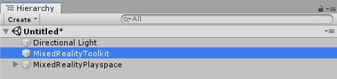
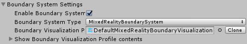
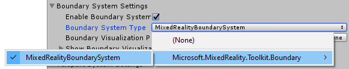
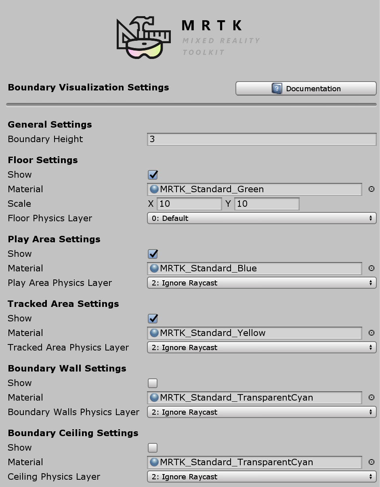

Boundary System (边界系统)
边界系统为可视化混合现实应用程序中的虚拟现实边界(boundary)组件提供了支持。边界定义了用户可以戴着VR头显安全地走动的区域。边界是混合现实体验的重要组成部分，可帮助用户在佩戴VR头显时避免看不见的障碍。
许多虚拟现实平台提供一个自动显示，例如当用户或其控制器接近边界时，白色轮廓叠加在虚拟世界上。Mixed Reality Toolkit的边界系统扩展了此功能，可以显示被跟踪区域的轮廓，地板平面和其他可用于向用户提供额外信息的功能。
入门
增加对边界的支持需要混合现实工具包的两个关键组件：边界系统和配置有边界的虚拟现实平台。
启用边界系统
边界系统由MixedRealityToolkit对象（或另一个服务注册者 组件管理)。
以下步骤假定使用MixedRealityToolkit对象。其他服务注册者（service registrars）所需的步骤可能有所不同。
在场景层次中选择MixedRealityToolkit对象。

将“Inspector”面板导航到“Boundary System”部分，然后选中“启用”

选择边界系统实现。MRTK提供的默认类实现是
MixedRealityBoundarySystem
[!注意] 所有边界系统实现都必须继承
IMixedRealityBoundarySystem
配置边界可视化
边界系统使用配置文件 指定要显示的边界组件并配置其外观。

[!注意] 默认配置文件的用户 (DefaultMixedRealityBoundaryVisualizationProfile) 的边界系统已预先配置为显示地板平面，游戏区域和被跟踪区域。
生成和部署
一旦边界系统配置了所需的可视化选项，就可以将项目生成为部署到目标平台。
[!注意] Unity Play模式可在编辑器中可视化所配置的边界。此功能可以快速进行开发和测试，而无需生成和部署步骤。确保使用在目标硬件和平台上运行的应用程序的生成和部署版本进行最终验收测试。
通过代码访问边界系统
如果启用并配置了边界系统，则可以通过CoreServices静态帮助程序类访问边界系统。然后，该引用可用于动态更改边界参数，并访问系统管理的相关GameObject。
// 在运行时隐藏边界墙
CoreServices.BoundarySystem.ShowBoundaryWalls = false;
// 为场景中的地面可视化获取Unity GameObject
GameObject floorVisual = CoreServices.BoundarySystem.GetFloorVisualization();